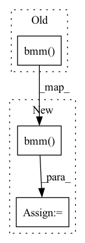

Pattern ID :1897
Before Change
if self.dropout is not None:
att = self.dropout(att)
m = torch.bmm( att, v) .view(-1, att.size(1), self._h_dims)
m = self.proj_m(m)
return mAfter Change
if self.dropout is not None:
att = self.dropout(att)
m = torch.bmm( att, v) .transpose(0, 1).contiguous()
m = self.m(m).view(m.size(0), -1, self._h_dims).transpose(0, 1)
return m
In pattern: SUPERPATTERN
Frequency: 4
Non-data size: 3
Instances Fragment ID: 7217098
Project Name: yeliudev/nncore
Commit Name: e58a22da4dce9778c38aae284b0c80d84937b04c
Time: 2021-11-05
Author: yeliudev@outlook.com
File Name: nncore/nn/blocks/transformer.py
M Class Name: MultiHeadAttention
N Class Name: MultiHeadAttention
M Method Name: forward(5)
N Method Name: forward(5)
M Parent Class: nn.Module
N Parent Class: nn.Module
M File Name: nncore/nn/blocks/transformer.py
N File Name: nncore/nn/blocks/transformer.py
M Start Line: 79
M End Line: 98
N Start Line: 79
N End Line: 105
Before Change
// Reshape value mapping
value_mapping = value_mapping.view(batch_size, -1, height * width)
// Attention features
attention_features = torch.bmm( value_mapping, attention)
// Reshape to original shape
attention_features = attention_features.view(batch_size, channels, height, width)
// Residual mapping and gamma multiplication
output = self.gamma * attention_features + inputAfter Change
key = key.view(-1, channels // 8, height * width // 4)
value = value.view(-1, channels // 2, height * width // 4)
// Calc attention map
attention_map = torch.bmm( query, key) .softmax(dim=-1).permute(0, 2, 1)
// Apply attention map to value to obtain the attention output features
attention_features = torch.bmm(value, attention_map)
// Reshape attention features
attention_features = attention_features.view(-1, channels // 2, height, width)
// Get output features Fragment ID: 7217110
Project Name: christophreich1996/semantic_pyramid_for_image_generation
Commit Name: 8d56a34edd21d5874a8d45af97eba926a6f171c0
Time: 2021-03-29
Author: 34400551+ChristophReich1996@users.noreply.github.com
File Name: models.py
M Class Name: SelfAttention
N Class Name: SelfAttention
M Method Name: forward(2)
N Method Name: forward(2)
M Parent Class: nn.Module
N Parent Class: nn.Module
M File Name: models.py
N File Name: models.py
M Start Line: 252
M End Line: 267
N Start Line: 257
N End Line: 272
Before Change
print("shape of key: {};".format(key.shape))
scores = torch.bmm(query, key.transpose(1, 2))
attention_weights = self.masked_softmax(scores, valid_len)
return torch.bmm( attention_weights, value)
def masked_softmax(self, X, valid_len):
masked softmax for attention scoresAfter Change
// print("shape of key: {};".format(key.shape))
scores = torch.bmm(query, key.transpose(1, 2))
attention_weights = self.masked_softmax(scores, valid_len)
x = torch.bmm( attention_weights, value) .reshape(-1, self.in_channels)
return x
@staticmethod Fragment ID: 7217095
Project Name: henry1iu/tnt-trajectory-predition
Commit Name: 328345919733a749a456f6b5b9168b4abbdf1319
Time: 2022-02-06
Author: liu.jb.henry@gmail.com
File Name: core/model/layers/global_graph.py
M Class Name: SelfAttentionFCLayer
N Class Name: SelfAttentionFCLayer
M Method Name: forward(4)
N Method Name: forward(4)
M Parent Class: nn.Module
N Parent Class: nn.Module
M File Name: core/model/layers/global_graph.py
N File Name: core/model/layers/global_graph.py
M Start Line: 153
M End Line: 158
N Start Line: 154
N End Line: 159